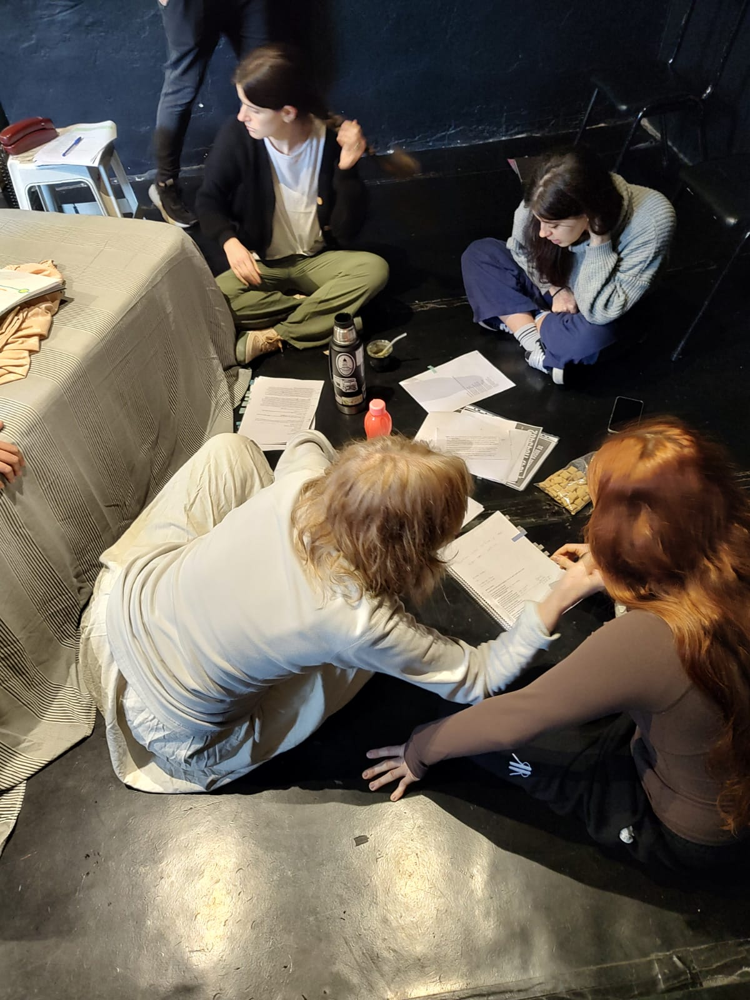
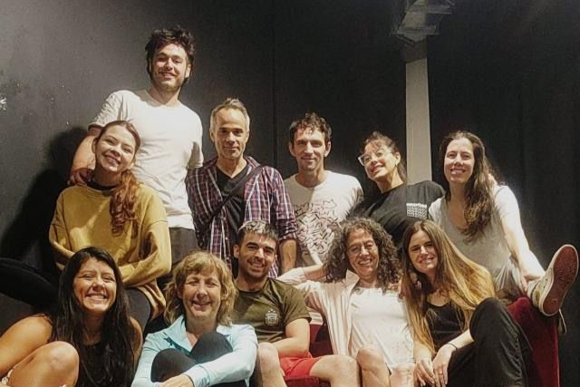
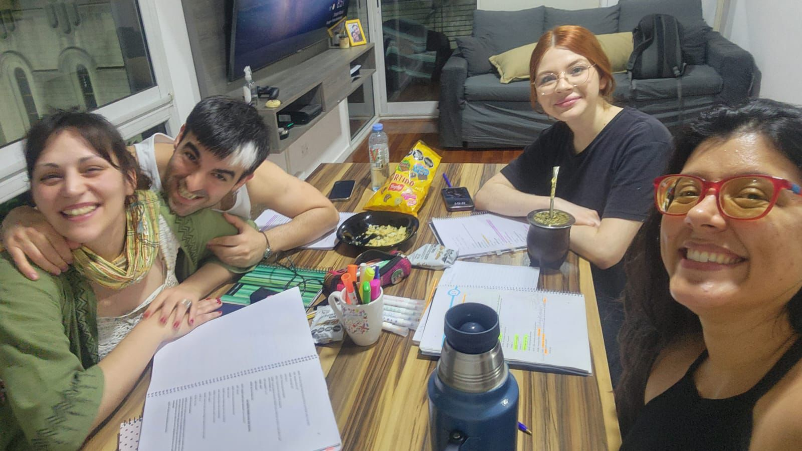
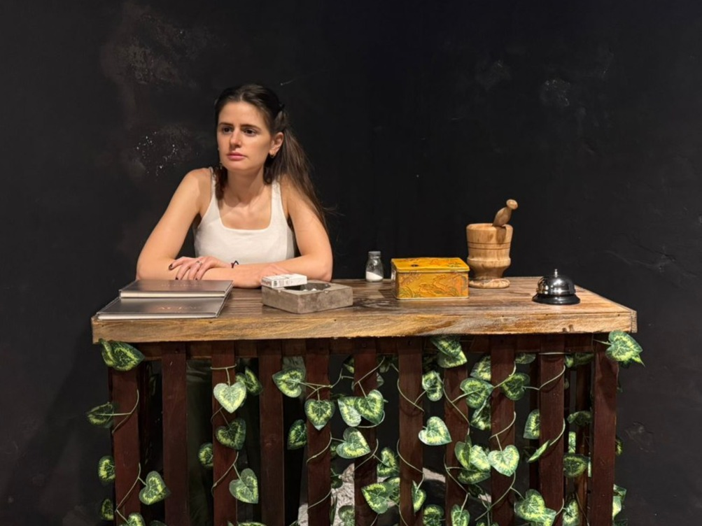
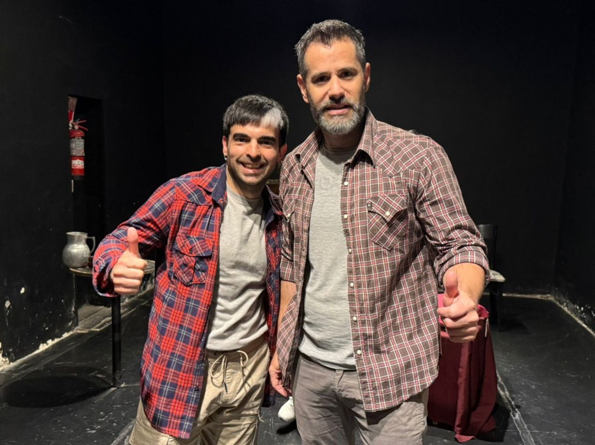
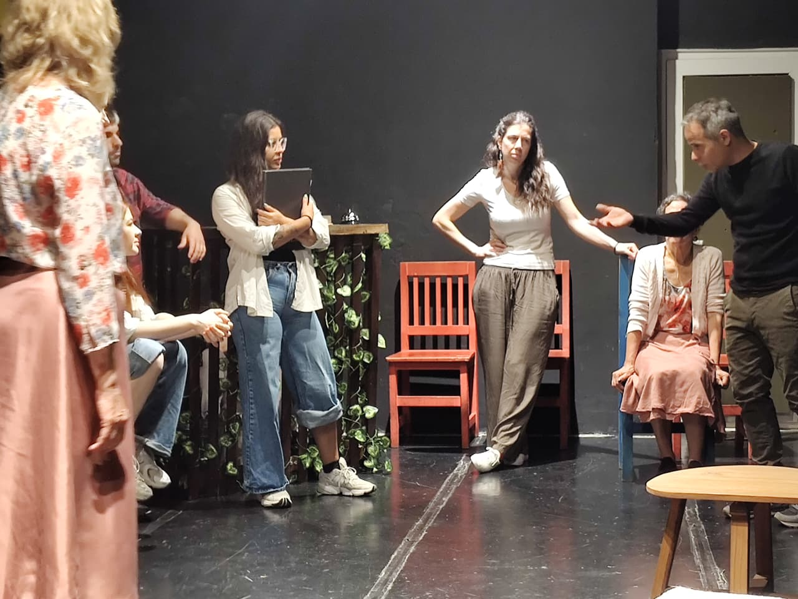

Donde empezó todo







Francisco Lumerman
Esta muestra está inspirada en El río en mí, de Francisco Lumerman, una obra que combina realismo social,
poesía y elementos fantásticos. La historia transcurre en un pequeño pueblo del litoral marcado por la
contaminación del río y por la misteriosa aparición de una enredadera oscura llamada Katupirí, que parece
invadirlo todo: la naturaleza, las casas y también la vida interna de quienes habitan ese lugar.
En este recorte conocemos a una madre y a su hija que administran un viejo hospedaje, un espacio donde
conviven el silencio, los recuerdos y un clima cada vez más inquietante. La llegada de una joven que busca
respuestas sobre lo que ocurrió con su padre despierta tensiones, secretos y verdades que las atraviesan. En
ese entramado aparece también el hijo, cuya presencia introduce otra mirada: la de quien observa, nombra y
registra, intentando comprender un territorio que también lo oprime. Su vínculo con la naturaleza y con lo
que está cambiando en el pueblo revela otro costado de la herida que deja el río.
La muestra recupera el tono de la obra original: una atmósfera cargada, donde lo poético y lo ominoso
conviven, y donde el río, herido y transformado, funciona como metáfora de un mundo que se desborda. A
través de este fragmento, se invita a recorrer las sensaciones centrales del universo de Lumerman: la
fragilidad, la violencia silenciosa, la naturaleza como fuerza viva y los vínculos marcados por lo no dicho.